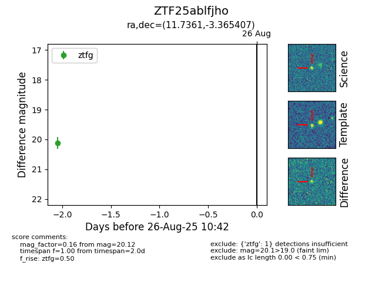

Target ZTF25ablfjho at 2025-08-26 10:53, see:
FINK: fink-portal.org/ZTF25ablfjho
Lasair: lasair-ztf.lsst.ac.uk/objects/ZTF25ablfjho
ALeRCE: alerce.online/object/ZTF25ablfjho
alt names
ZTF25ablfjho (ztf,fink)
coordinates:
equatorial (ra, dec) = (11.7361,-3.36541)
galactic (l, b) = (120.1507,-66.21289)
photometry
last ztfg=20.12
1 ztfg detections
